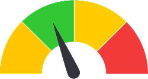

Cek BMI kamu disini untuk mengetahui kategori berat badanmu

BMI
BMI (Body Mass Index) dihitung dari berat badan dan tinggi badan, untuk menunjukkan apakah tubuh kamu berada dalam kategori underweight, normal, overweight, atau obesity. BMI bermanfaat sebagai indikator awal untuk memahami kondisi tubuh sebelum dilakukan pemeriksaan lebih lanjut.